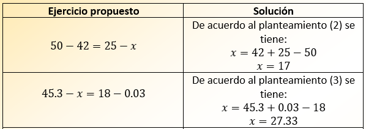
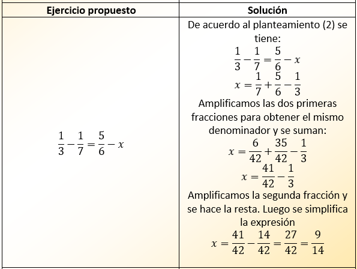
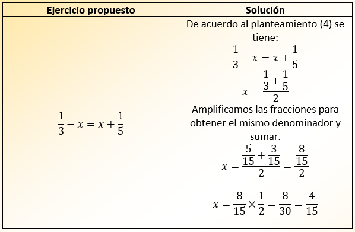
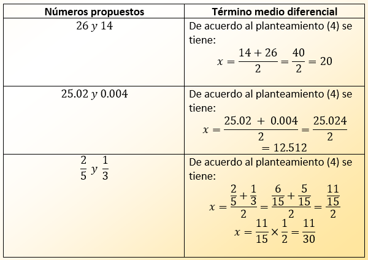

Ejercicios Resueltos Algunos ejercicios permitirán afianzar estos postulados. Hallar los términos desconocidos en los siguientes ejercicios: Ejercicio 1  Ejercicio 2  Ejercicio 3  Ejercicios para hallar el término medio diferencial 